0. Login & User Roles
Navigate to http://localhost:3000 (or your deployed URL). You'll be redirected to the login page.
Test Accounts
| Email | Password | Role | What They Can Do |
|---|
| admin@illume.edu | password123 | SUPER_ADMIN | Full access to everything. Manage users, permissions, all modules. |
| hq@illume.edu | password123 | HQ_EXECUTIVE | Executive view. Analytics, reports, strategic decisions. Read-only on most data. |
| analytics@illume.edu | password123 | HQ_ANALYTICS | Analytics dashboards. Read-only on data. |
| manager@illume.edu | password123 | REGIONAL_MANAGER | Manage a region (SEA). Approve reports, manage ICRs, view regional data. |
| icr@illume.edu | password123 | ICR | In-Country Representative. Log activities, manage leads, submit reports. |
| hr@illume.edu | password123 | HR_MANAGER | HR module: employees, leave, attendance, knowledge base. |
Tip: Login as admin@illume.edu to see all modules. Other roles see a filtered sidebar based on their permissions.
1. Dashboard
The Dashboard is your landing page after login. It shows a high-level snapshot of the entire CRM.
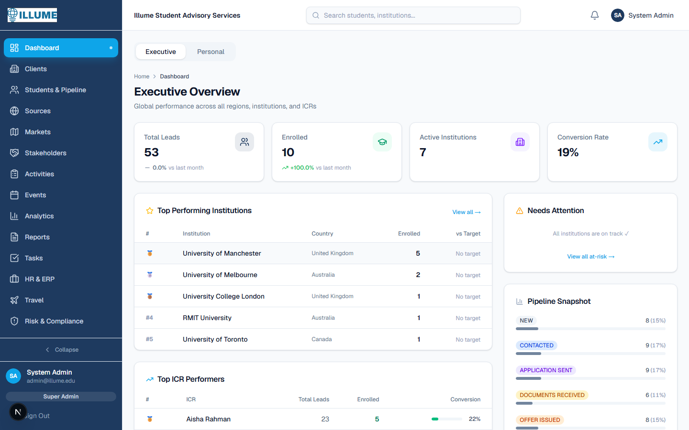
Dashboard - Overview with key metrics, pipeline stats, and recent activity
What You See
- Total Leads, Enrolled, Conversion Rate - Pipeline metrics at a glance
- Active Institutions - Number of client partnerships
- Recent Activities - Latest logged activities across the team
- Notifications bell (top-right) - Contract renewals, pending reports, lead alerts
2. Client Management (Institutions)
The Clients module manages your institutional partnerships - universities, colleges, and other education providers. This is the backbone of the CRM.
2.1 Client List
Navigate: Sidebar > Clients
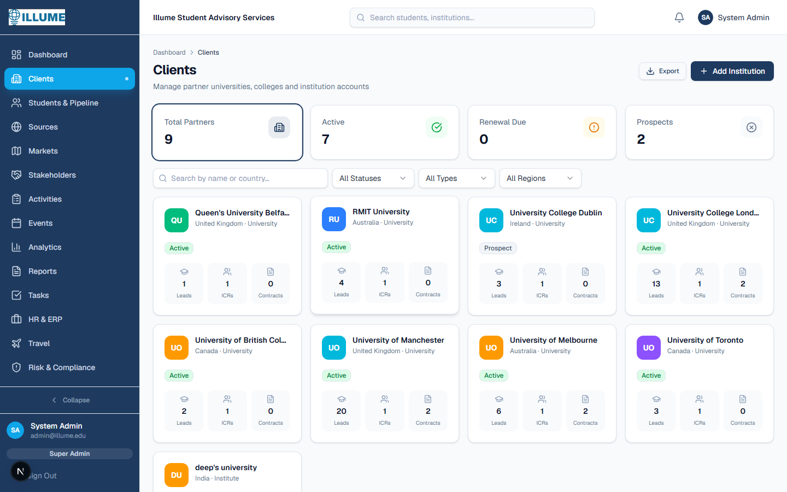
Clients page - Card view showing 9 partner institutions with lead counts, ICR assignments, and contract counts
- Summary cards at top: Total Partners (9), Active (7), Renewal Due (0), Prospects (2)
- Search & filter: by name, status, type, or region
- Each card shows leads count, ICRs assigned, contracts count
- Click any card to open the institution detail page
- + Add Institution button (top-right) to create a new client
2.2 Client Detail Page
Click any institution card to see its full profile.
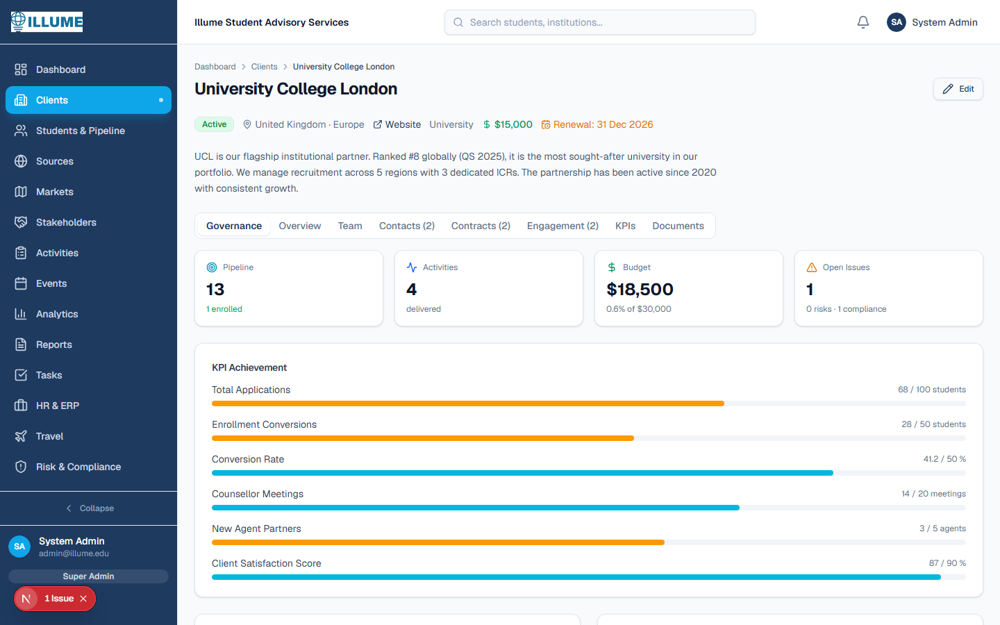
UCL detail page - Shows status, contract value ($15,000), renewal date, overview, and Governance dashboard with KPI progress bars
The detail page has 8 tabs:
Governance
Pipeline stats, budget usage, KPI achievement bars, recent activities, open risks & compliance items.
Overview
Strategic objectives, enrollment targets vs actuals, yearly performance charts.
Team
Account manager, assigned ICRs and their contact details.
Contacts
Institution contacts (Director of Recruitment, Regional Manager, etc.).
Contracts
Partnership agreements with dates, values, renewal warnings, and file attachments.
Engagement
History of meetings, calls, and emails with the institution.
KPIs
Tracked KPIs by category with progress bars. Filter by year.
Documents
Uploaded files related to the institution.
2.3 KPIs Tab
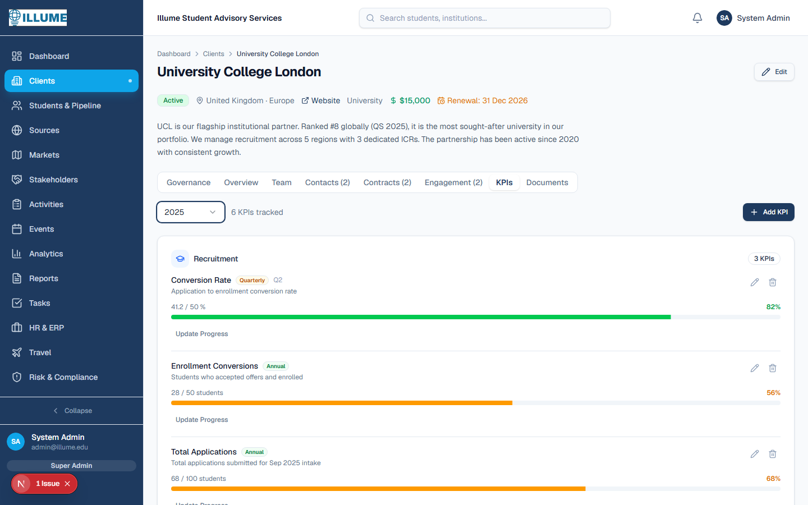
KPIs tab for UCL (2025) - 6 KPIs tracked across Recruitment, Engagement, Market Development, and Relationship categories
- Year selector at top to switch between years
- KPIs grouped by category (Recruitment, Engagement, Market Development, Relationship)
- Each KPI shows: name, period (Annual/Quarterly), current vs target, progress bar, percentage
- "Update Progress" link to update current values
- "+ Add KPI" button to create new KPIs
2.4 Contracts Tab (with Attachments)
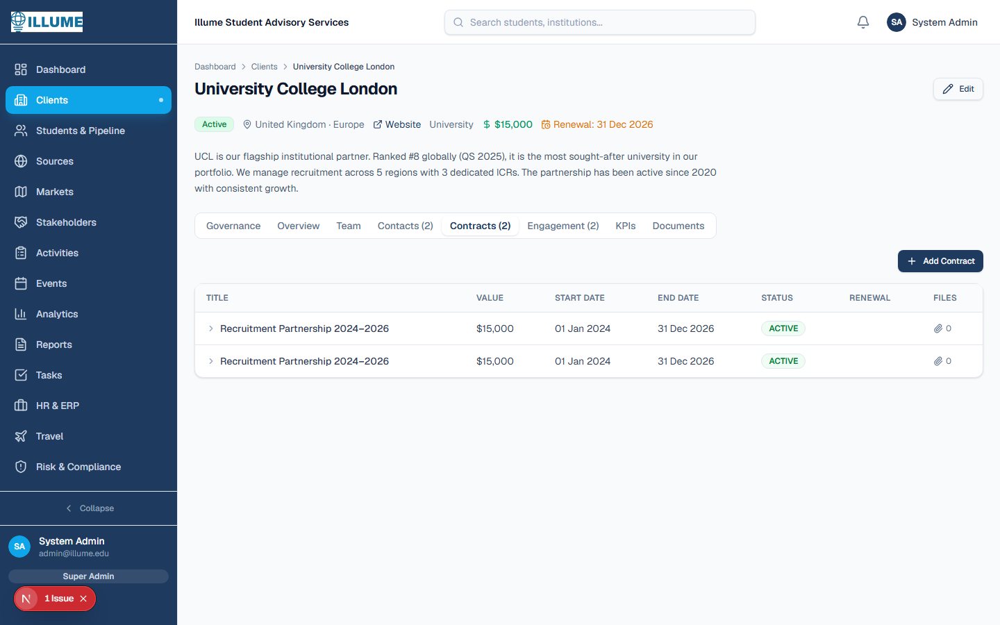
Contracts tab - Table shows title, value, dates, status, renewal warnings, and a Files column with attachment count
- Each contract row has a chevron (>) - click to expand and see/upload attachments
- Files column shows attachment count with paperclip icon
- When expanded: "Attach File" button to upload documents (PDF, DOCX, images, up to 5MB)
- Attachments can be downloaded (click download icon) or deleted (hover to see trash icon)
- Renewal warnings show as colored badges: red for expired or < 30 days, amber for < 60 days
3. Students & Pipeline
Navigate: Sidebar > Students & Pipeline
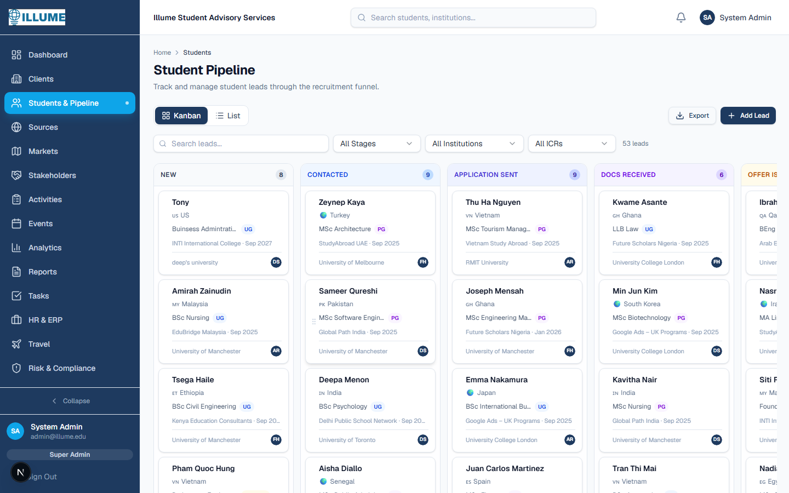
Student pipeline - 53 leads across 9 stages with filters, search, and stage-based color coding
How It Works
- Lead Created - Student enters as NEW (via form, agent referral, or event)
- CONTACTED - ICR makes first contact
- APPLICATION_SENT - Application submitted to institution
- DOCUMENTS_RECEIVED - Supporting documents collected
- OFFER_ISSUED - Institution issues an offer letter
- ENROLLED - Student accepts and pays deposit
- Filter by: stage, institution, source, region, assigned ICR
- Click any student to see full profile: documents, activity timeline, notes
- Leads can also be DEFERRED, REJECTED, or LOST
- The system tracks last contacted and last progressed dates for follow-up alerts
4. Market Management
Navigate: Sidebar > Markets
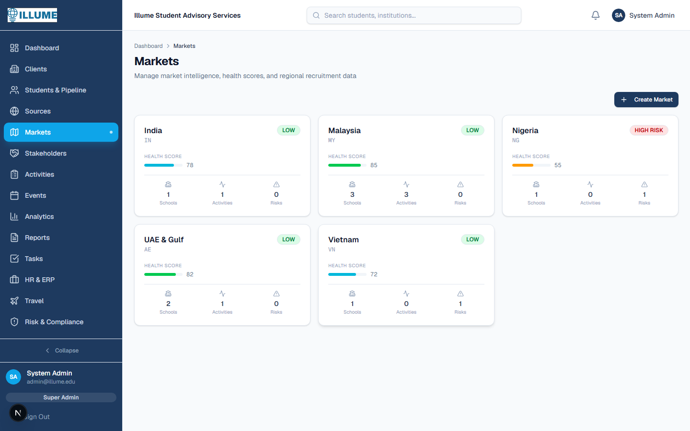
Markets page - 5 markets (Malaysia, India, UAE & Gulf, Nigeria, Vietnam) with health scores and risk levels
What Each Market Contains
- Health Score (0-100): Overall market health assessment
- Political Risk Level: LOW, MEDIUM_RISK, HIGH_RISK, CRITICAL
- Student Mobility Notes: Trends in student movement from this market
- Competitor Institutions: Who you're competing against
- Visa Trends: Approval rates and policy changes
- Currency Trends: Exchange rate impacts on affordability
- Government Stakeholders: Key ministry contacts
- Industry Associations: Professional bodies to engage
Market Detail Page
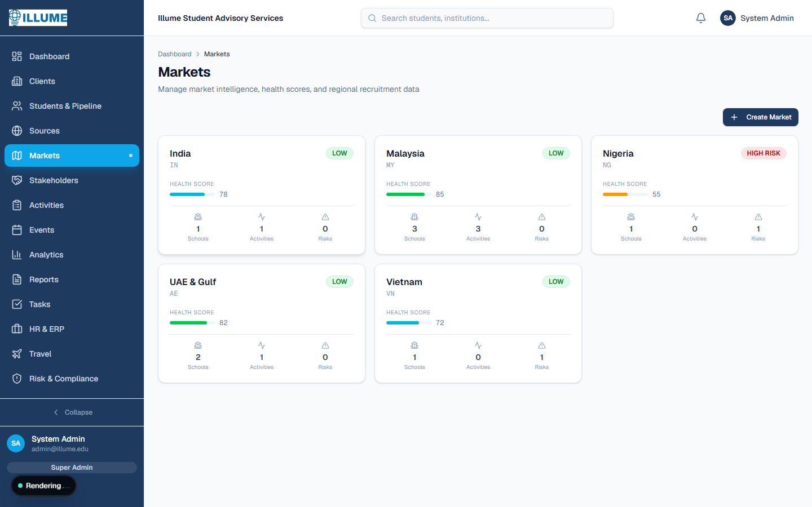
Market detail page - Full intelligence profile with linked schools, agents, and activities
5. Stakeholder Management
Navigate: Sidebar > Stakeholders
Manages three types of stakeholders across 4 tabs: Schools, Agents, Counsellors, and Performance.
5.1 Schools Tab
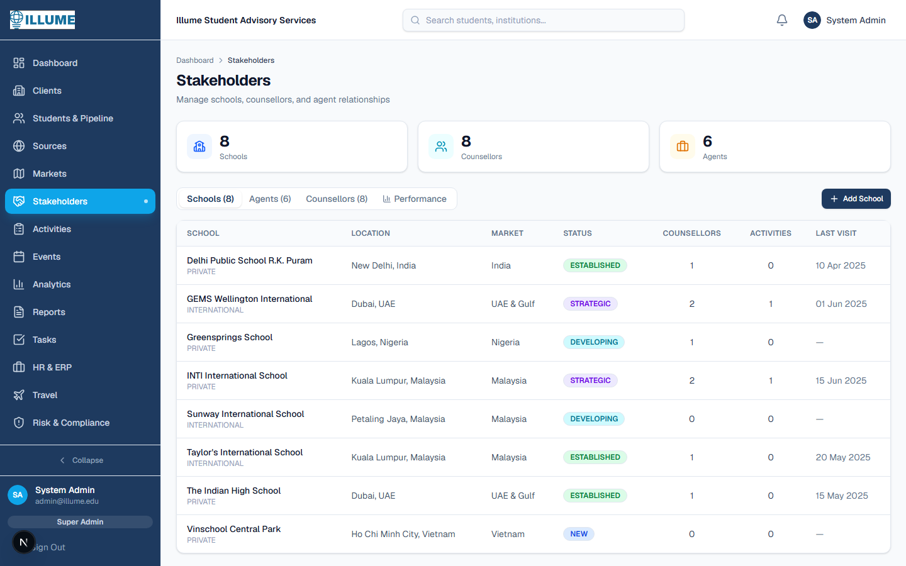
Schools tab - 8 feeder schools with relationship status (Strategic, Established, Developing, New), student volume, and market
- Each school shows: name, type (Public/Private/International), relationship status, student volume, relationship score
- Relationship Status: NEW > DEVELOPING > ESTABLISHED > STRATEGIC (or AT_RISK / DORMANT)
- "+ Add School" to create new school partnerships
5.2 Agents Tab
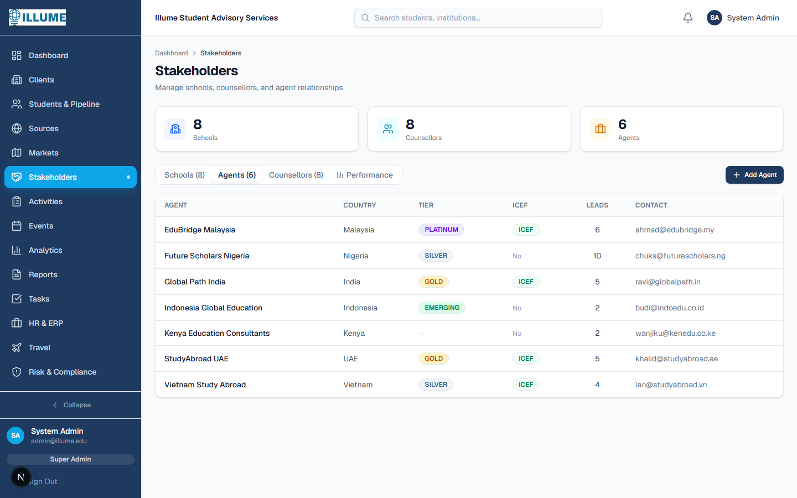
Agents tab - Shows agent profiles with tier (Platinum/Gold/Silver/Emerging), ICEF membership, pipeline metrics
- Agent data includes: tier, certification, ICEF membership, country coverage
- Pipeline metrics: offers, deposits, enrolments, visa approvals, yield rate
5.3 Counsellors Tab
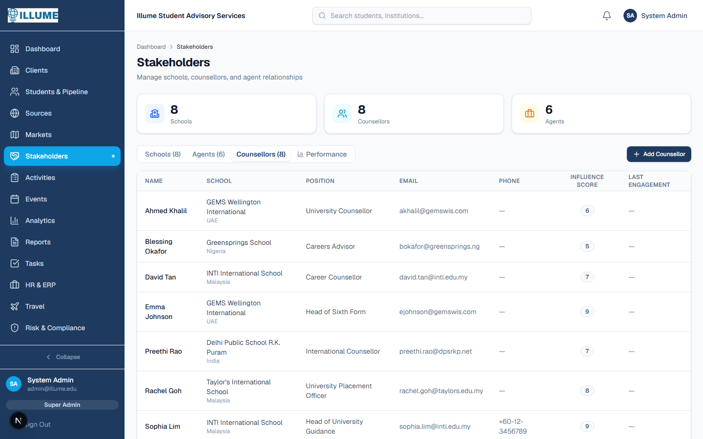
Counsellors tab - School counsellors with influence scores (1-10), positions, and engagement notes
5.4 Agent Performance Dashboard
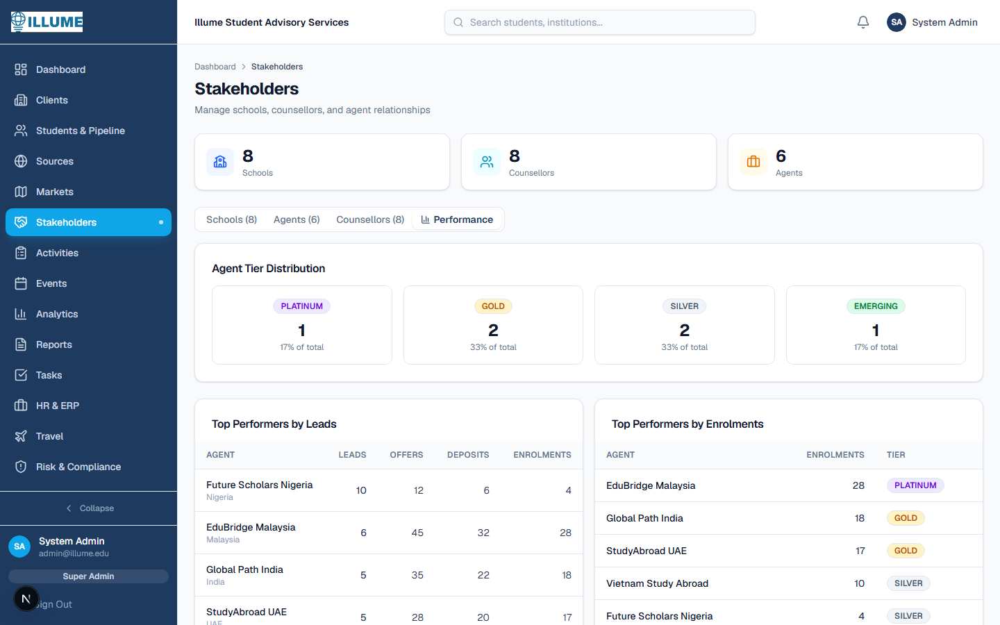
Performance tab - Aggregated agent performance metrics for management review
6. Activity Management
Navigate: Sidebar > Activities
Every field interaction is logged here: school visits, agent meetings, student events, fairs, and partner meetings.
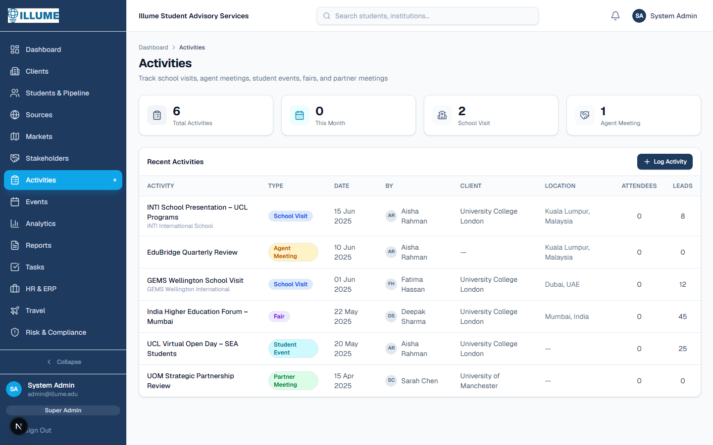
Activities page - 6 logged activities with type, date, location, leads generated, cost, and linked entities
Activity Types
SCHOOL_VISIT
Presentations at feeder schools. Tracks students engaged, counsellors met, leads generated.
AGENT_MEETING
Quarterly reviews, training sessions with agent partners. Tracks ROI.
STUDENT_EVENT
Open days, virtual events, webinars. Tracks attendees and applications.
FAIR
Education fairs and exhibitions. Large-scale lead generation events.
PARTNER_MEETING
Strategic meetings with institutional partners. Discusses targets and new programs.
Logging an Activity
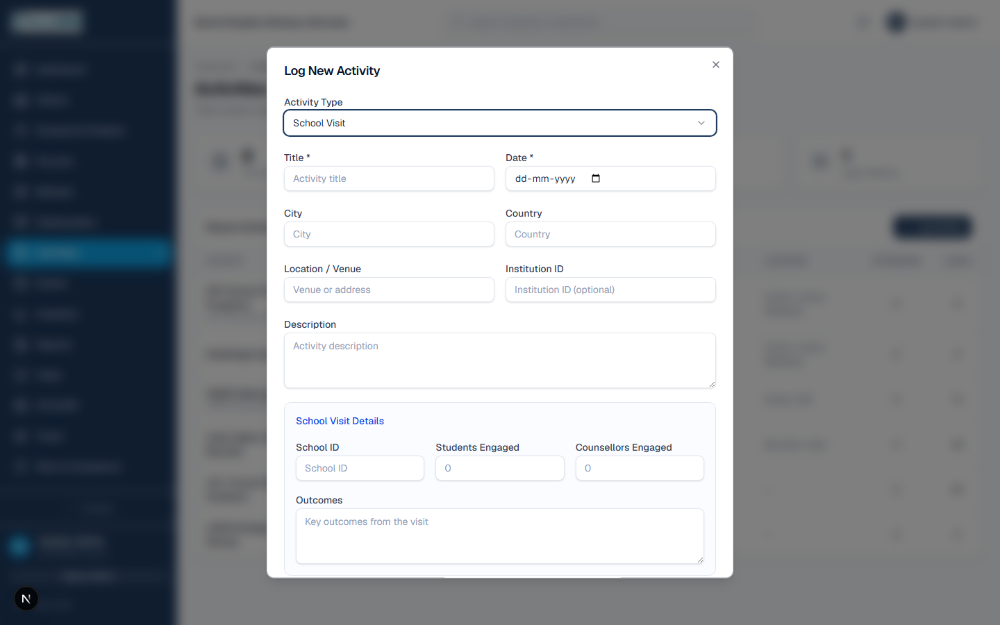
Log Activity dialog - Select type, fill in details, link to institution/market/school/agent, record outcomes
- Click "+ Log Activity" to open the dialog
- Select activity type - the form adapts based on type selected
- Link to institution, market, school, or agent as relevant
- Record: outcomes, follow-up actions, topics discussed, cost, ROI
- Activities can auto-generate follow-up tasks based on action items
7. Tasks & Accountability
Navigate: Sidebar > Tasks
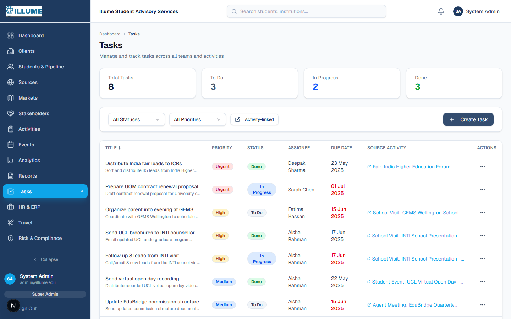
Tasks page - 8 tasks with priority badges, status tracking, assignees, due dates, and linked source activities
Key Features
- Priority levels: Urgent (red), High (orange), Medium (blue), Low (gray)
- Status workflow: To Do > In Progress > Done (or Cancelled)
- Activity-linked toggle: Filter to see only tasks that came from activities
- Source Activity column: Shows which activity generated this task (clickable link)
- Assignee: Who is responsible for completing the task
- Filter by: status, priority, activity-linked
- "+ Create Task" to manually create tasks
Tip: When you log an activity with action items, the system can automatically create tasks assigned to the appropriate team member.
8. Travel Management
Navigate: Sidebar > Travel
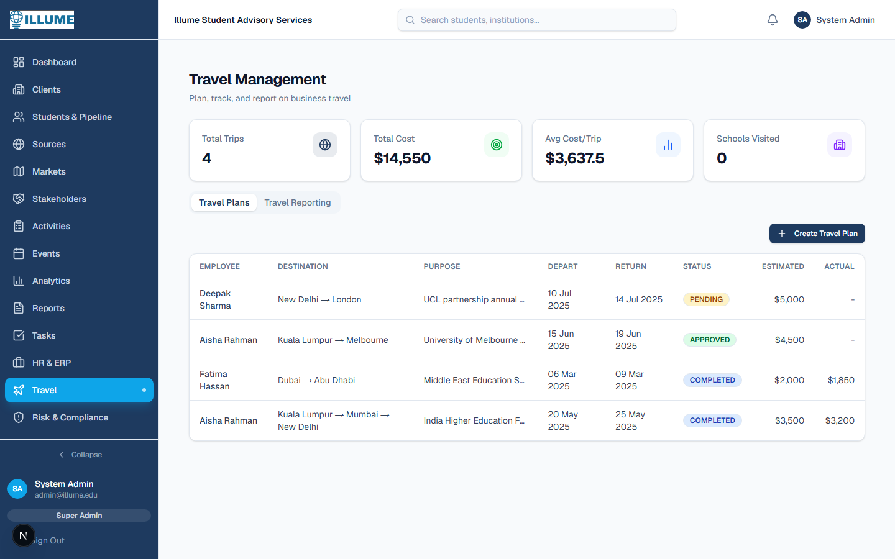
Travel Management - 4 trips totaling $14,550 with status tracking (Pending, Approved, Completed)
Two Tabs
- Travel Plans: List of all travel requests with destination, purpose, dates, estimated/actual costs, status
- Travel Reporting: Aggregated travel analytics and expense summaries
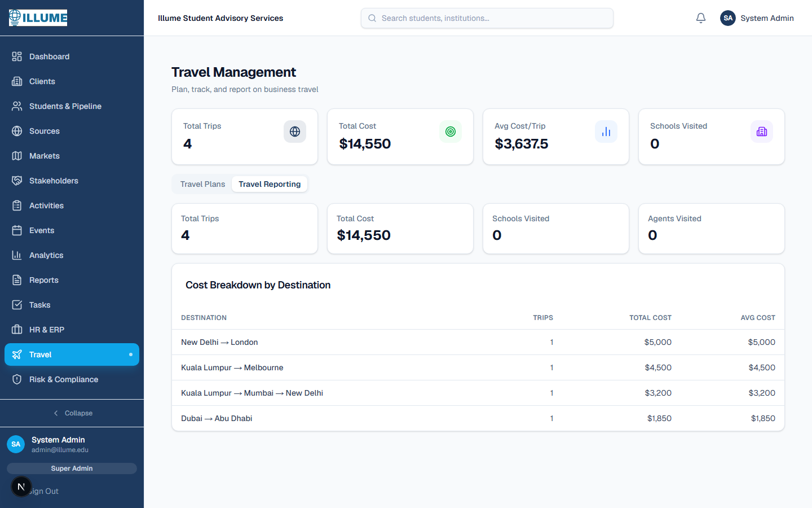
Travel Reporting tab - Analytics on travel spending patterns
Travel Request Workflow
- Create - Employee creates travel request with destination, purpose, dates, estimated cost
- Pending - Request awaits manager approval
- Approved - Manager approves, travel can proceed
- Completed - After return, actual cost is recorded
Each travel request can have:
- Itinerary items: flights, hotels, transfers with confirmation references
- Meetings: scheduled meetings during the trip, linked to activities
9. Reporting Engine
Navigate: Sidebar > Reports
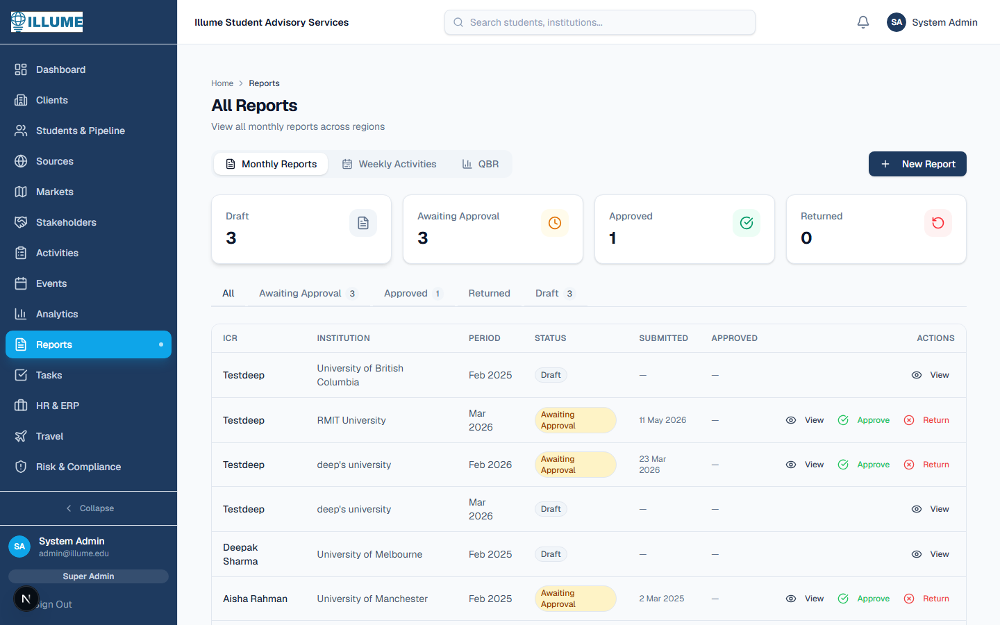
Reports page - Monthly reports with approval status workflow (Draft > Pending Review > Approved)
Report Types
- Monthly Reports: ICRs submit monthly activity reports for each institution they manage. Includes leads data, program breakdown, source performance, KPI summary, engagement notes, challenges, and next month plan.
- Weekly Activities: Quick weekly activity tracking (agent visits, school engagements, enquiries)
- Quarterly Business Reviews (QBRs): Comprehensive quarterly analysis per institution
Quarterly Business Reviews
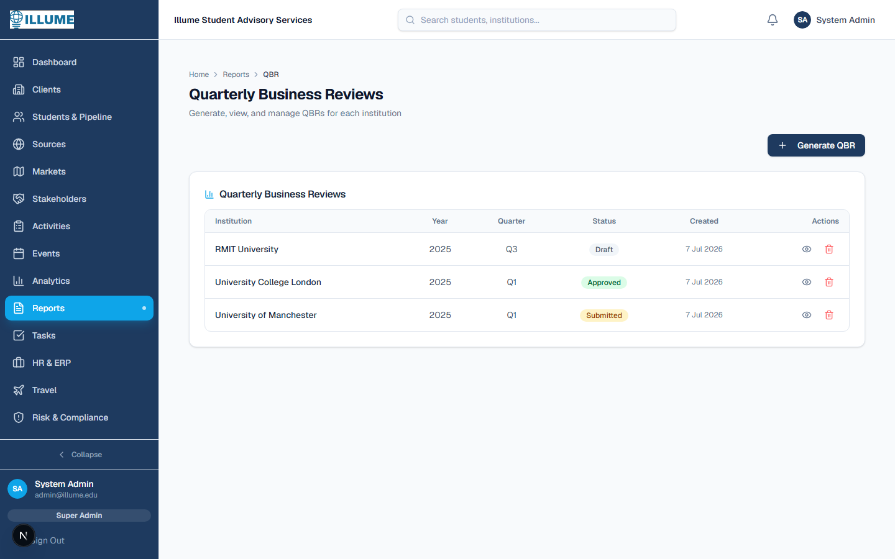
QBR page - Quarterly Business Reviews with executive summaries, market performance, ROI analysis, and strategic recommendations
- QBRs contain: executive summary, market performance breakdown, ROI analysis, strategic recommendations, KPI summary
- Status: DRAFT > SUBMITTED > APPROVED
- Can be generated and exported as PDF
Report Approval Workflow
- ICR creates monthly report (DRAFT)
- ICR submits for review (PENDING_REVIEW)
- Regional Manager reviews and approves (REGIONAL_APPROVED)
- HQ reviews and gives final approval (FINAL_APPROVED) or returns for edits
10. Risk & Compliance
Navigate: Sidebar > Risk & Compliance
10.1 Risk Register
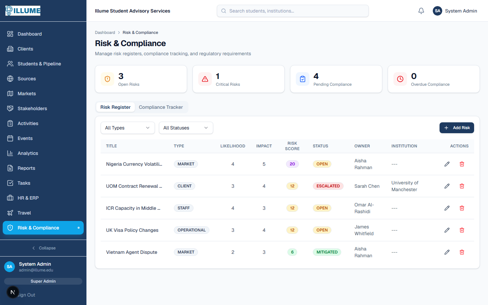
Risk Register - 5 risks with type (Market/Client/Staff/Operational), likelihood, impact, risk score, status, and owner
- Risk Types: MARKET, CLIENT, STAFF, OPERATIONAL
- Risk Score = Likelihood (1-5) x Impact (1-5). Scores 15+ are critical.
- Status: OPEN, ESCALATED, MITIGATED, CLOSED
- Each risk has an owner, optional institution/market link, and mitigation plan
- Color-coded risk scores: red (15+), orange (10-14), green (<10)
10.2 Compliance Tracker
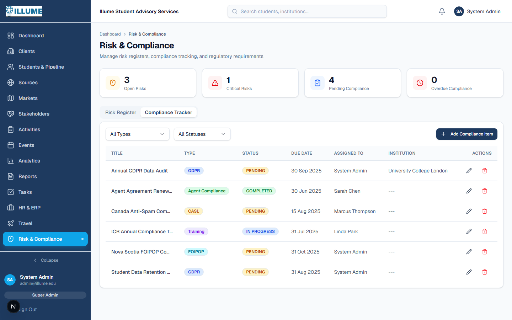
Compliance Tracker - 6 items across GDPR, FOIPOP, CASL, Agent Compliance, and Training categories
- Compliance Types: GDPR, FOIPOP, CASL, AGENT_COMPLIANCE, TRAINING, OTHER
- Tracks: title, description, due date, assigned person, status (Pending/In Progress/Completed)
- Summary cards show: Open Risks, Critical Risks, Pending Compliance, Overdue Compliance
11. HR & ERP Module
Navigate: Sidebar > HR & ERP
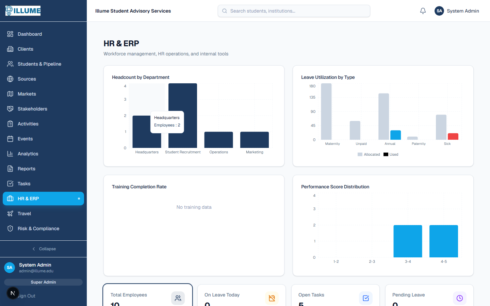
HR overview - Department distribution chart, leave allocation, training completion, performance score distribution
HR Tabs
The HR module has 11 tabs: Employees, Leave Management, Holidays, Attendance, Tasks, Announcements, Assets, Knowledge Base, Performance Reviews, Succession Planning, Leave Balances.
11.1 Performance Reviews
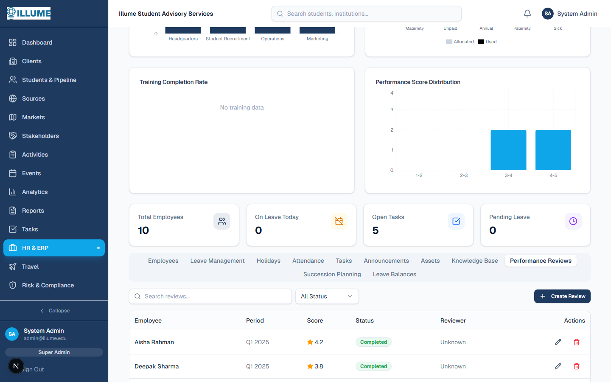
Performance Reviews tab - Q1 2025 reviews with scores, strengths, improvement areas, and goals
- Reviews include: period, score (1-5), strengths, areas for improvement, goals
- Status: PENDING, COMPLETED
- Scores feed into the performance distribution chart on the overview
11.2 Succession Planning
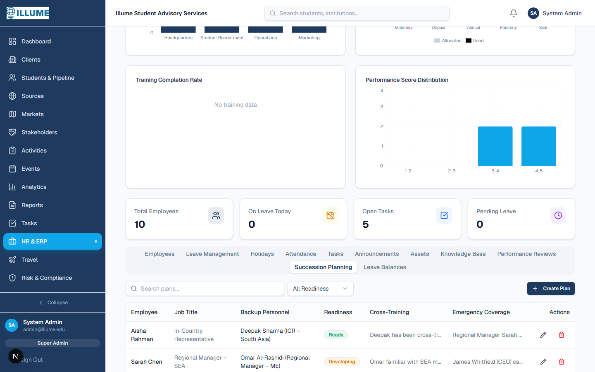
Succession Planning - Backup personnel, cross-training status, emergency coverage, and readiness levels
- For each key employee: backup personnel identified, cross-training notes
- Readiness Levels: READY (green), DEVELOPING (yellow)
- Emergency coverage plan documented
- Filter by readiness level; search by employee name
12. Knowledge Base
Navigate: Sidebar > Knowledge Base
Centralized repository of organizational knowledge, split into 4 categories:
12.1 General KB
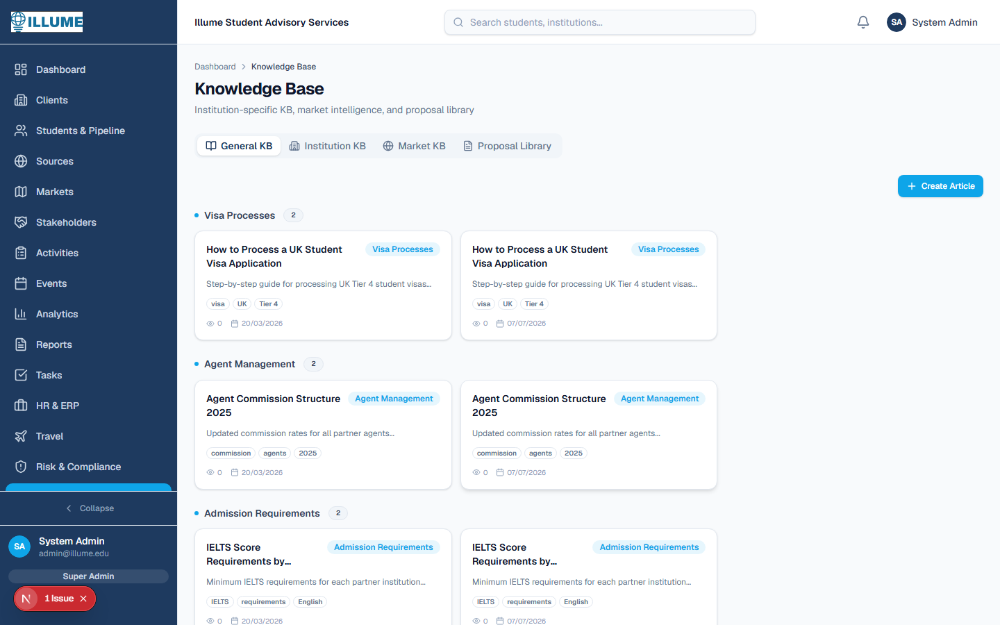
General KB - Articles on visa processes, agent management, admission requirements, and operations
12.2 Institution KB
Institution KB - Institution-specific knowledge (UCL application guide, UOM scholarship guide)
Articles linked to specific institutions. Example: "UCL Application Process & Requirements" - detailed entry requirements, IELTS scores, deadlines.
12.3 Market KB
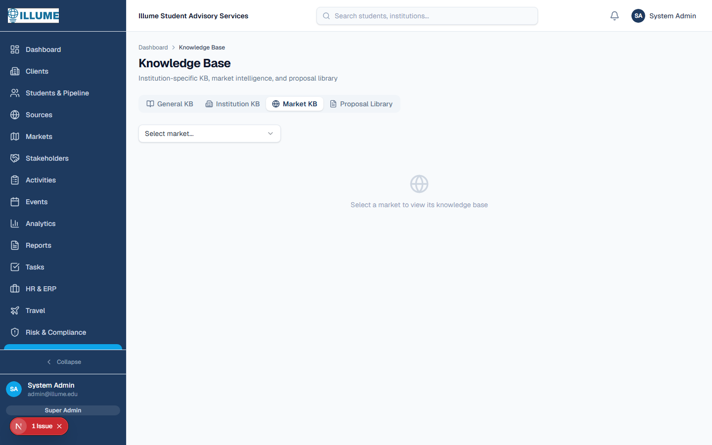
Market KB - Market intelligence reports (Malaysia Q2 2025 - student mobility, competitor activity, regulatory updates)
12.4 Proposal Library
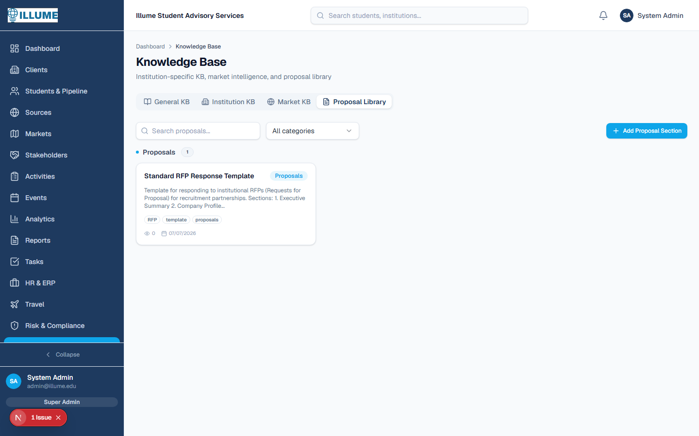
Proposal Library - RFP templates, proposal documents, and institutional pitch materials
- All articles support: tags, categories, file attachments, view tracking
- "+ Create Article" button to add new knowledge
- Articles can be linked to institutions or markets for context
13. Analytics & Executive Command Centre
Navigate: Sidebar > Analytics
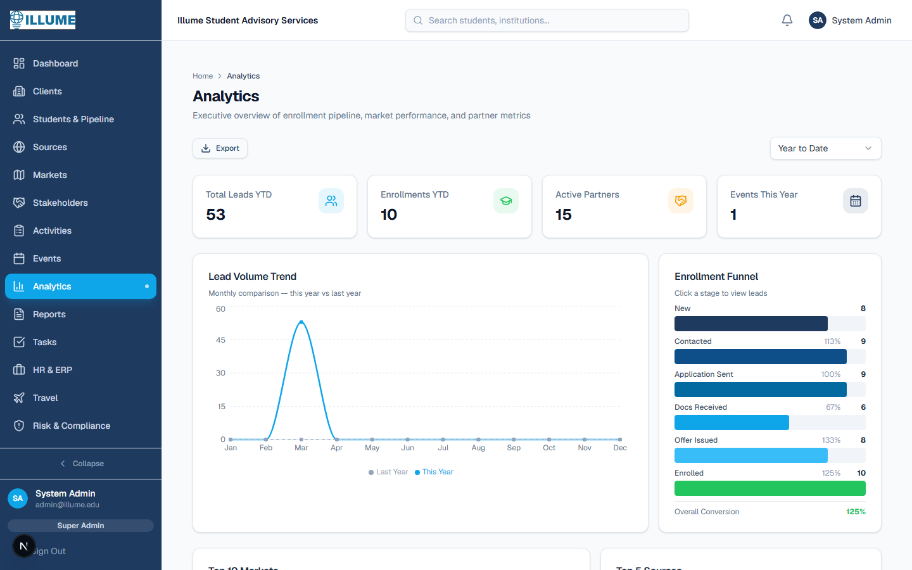
Analytics dashboard - Lead trends, enrollment funnel, source performance, and regional breakdown
Executive Command Centre
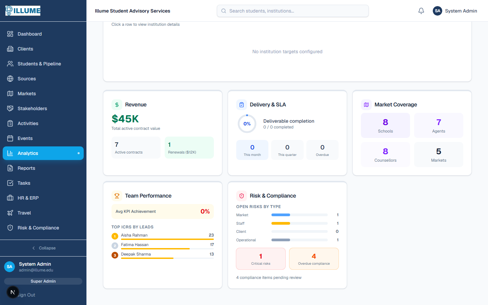
Executive Command Centre - 5 strategic widgets for CEO-level decision making
Analytics Widgets
- Lead Trends: Monthly lead generation over time
- Enrollment Funnel: Pipeline conversion at each stage
- Source Performance: Which agents/schools/channels generate best results
- Regional Breakdown: Performance by geographic region
- Executive widgets: Revenue projections, risk summary, KPI achievements, strategic priorities
Illume CRM & ERP User Guide | Generated July 7, 2026
Built with Next.js 16 + React 19 + Prisma 7.5 + PostgreSQL + TailwindCSS + shadcn/ui
All screenshots captured from live application with real seed data.